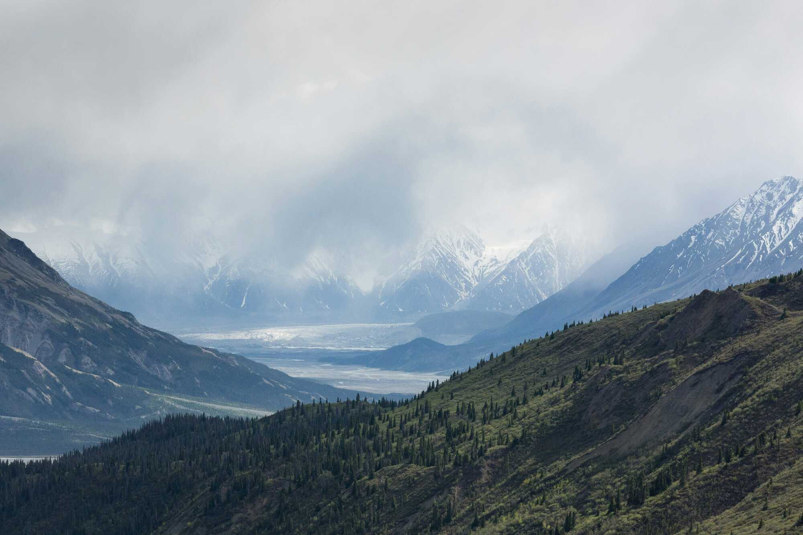
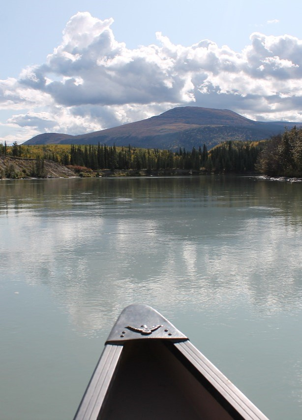
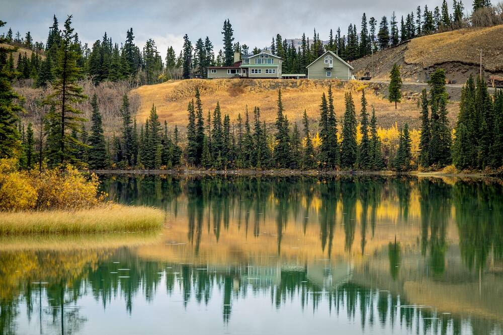

Discover the untamed beauty of Yukon, where nature and wildlife thrive in a pristine wilderness. Vast landscapes of rugged mountains, dense forests, and crystal-clear lakes provide a haven for diverse species. Witness majestic caribou herds, elusive wolves, and the iconic grizzly bears in their natural habitat.